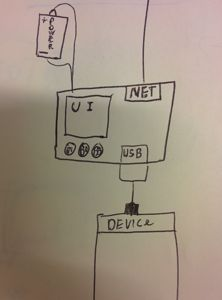
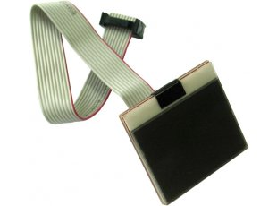

Hardware selection UI¶
For flashing the devices it is very nice if you can have some form of UI and there are many ways of getting there.
Output:
- Attach the device to a HDMI screen
- Attach LEDs to the board
- Attach an LCD screen or 7-segment display
- Run a web server and access the UI on a phone or similar
- Use sound as output
- Use the usb gadget framework(e.g. allow to attach to the board with a phone and interact with the device)
Input:
- No input, just flash what is on the system
- Use different USB keys or MMC cards to flash different software
- Add buttons to the design
- Allow the device to connect to a server and configure the device online
- Run a web server
Requirements: I looked at the different options and sometimes came up with more options but in the end I wanted something that can work standalone. The idea to have a standalone device that can be taken to evens really sounted very nice.
Here are other options I was thinking about and some reasons I did not follow up on them: Runing a webserver was not feasible because one also then needs do networking/discovery and I did not want to dig into that. I might have to combine this with a small display on the device as to publish the IP address of the device.
I also looked at using the HDMI port and hooking a keyboard to the device but that really started to become a cumbersome project(We might as well provide documentation on flashing devices from a standard PC).
I therefore settled for adding a screen and a few buttons to the flashing device
Choice of LCD displays¶
I looked a different displays that where present and available for the Olimex board. This is where a RyPi might have been a no brainer because there are probably many (but still quite expensive) display and solution present. Looking the available options and seeing that in many cases I would have to spend and additional 40 Euro would bring the cost of this “little” hardware project to something I did not feel confortable with specially knowing that one can buy cheap Android phones or tablets bellow that price range.
| Device type | price | connectivity | Size |
|---|---|---|---|
| LCD screen | +- 40 euro | cape | quite big |
| LCD screen + touch pad | +- 40 euro | cape | quite big |
| 7Segment display | few euro | lots of wires | quite high |
| 16x2 char display | 10 Euro | i2c | nice fit |
| Nokia 3310 display | few euro | spi | slim fit |
Knowing that the Lime also has an expansion board and an UEXT connector it was nice to see that there was an LCD3310 module and I (wrongly) assumed that the board would be plug an play We later also found that olimex is selling the display and corresponding connector on their website
